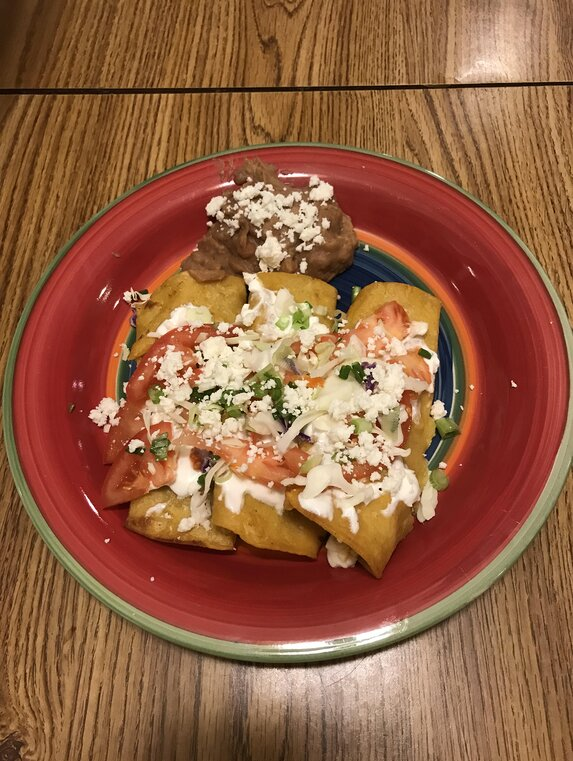

Authentic Enchilada

Description
This is the real thing! Corn tortillas are dipped in a home made sauce,
fried, filled with Mexican queso fresco,
then topped with sour cream, lettuce and tomato.
My mother in law is from Mexico and taught me to make
this delicious dish! Serve with authentic refried beans,
it has a taste different from the norm--so good!
Ingredients
- 6 dried chile de arbol peppers
- 1 clove garlic
- 1 teaspoon salt
- 3/4 cup water
- 1 cup vegetable oil for frying
- 18(6 inch) corn tortillas
- 3 cups crumbled queso fresco or chichuhua cheese
- 1 cup sour cream
- 1 cup shredded lettuce
- 2 medium tomatoes, thinly sliced
- 1/2 cup chopped green onions
Steps
- Snap the tops off of the dried chilies, and place in a saucepan with enough water to cover. Bring to a boil, and simmer for 15 minutes. Drain the water, and place chilies into a food processor or blender with the garlic and salt. Puree until smooth. Press sauce through a strainer, and set aside.
- Heat the oil in a large skillet over medium heat. Soak each tortilla in the sauce, then place in the hot oil. Turn over almost immediately, and fry for about 5 seconds on the other side. Remove to a plate that is lined with paper towels. The easiest way to do this is to fry the tortillas and stack them directly on top of each other until you have fried them all. This will keep the tortillas pliable until you are ready to fill them.
- Take one fried tortilla at a time, and fill with about 2 tablespoons of the queso fresco. Roll up, and place seam side down on a plate. Place three of these on each plate. Top in the following order: Start with a layer of sour cream, then a small handful of lettuce, three tomato slices, 2 more tablespoons of queso fresco, and finally, 1 tablespoon of green onions.